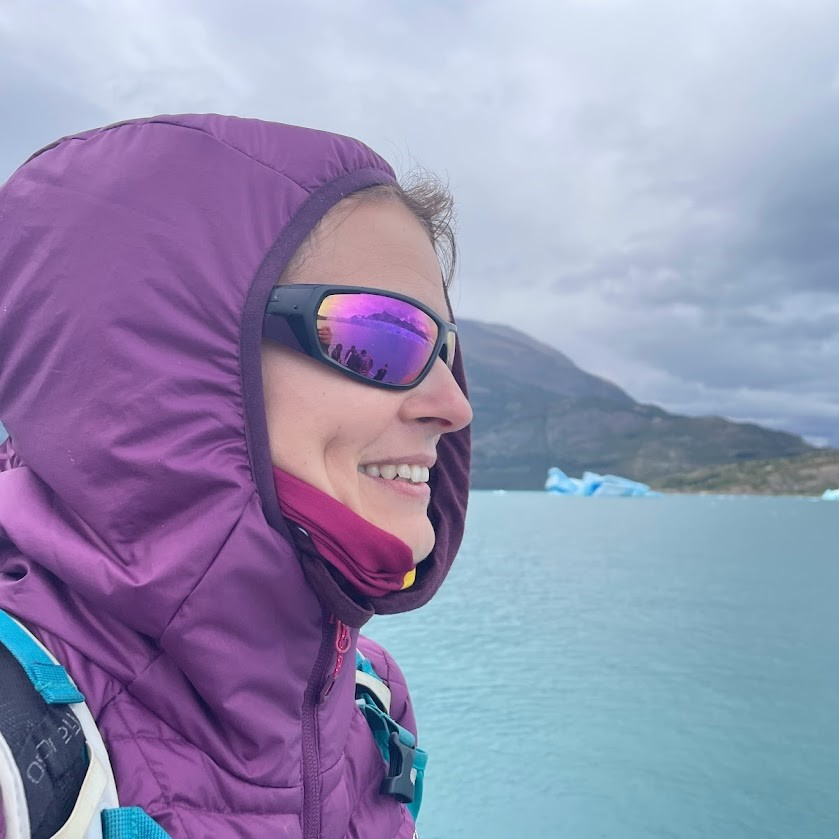

A small introduction about my self
I am transitioning into a new career as a junior web developer after a successful 14-year tenure as an Operations Manager. My passion for web development has driven me to start preparing for this change years before leaving my previous role, taking courses in HTML, CSS, JavaScript, and testing methodologies. Through programs like Czechitas’ Staň se kodérkou, I gained essential skills in coding responsive websites, mastering layout techniques, and applying modern development tools. This career shift is fueled by a desire to combine my operational management experience with my newfound technical expertise. My commitment to continuous learning, problem-solving, and adapting to new challenges motivates me to pursue this new path in web development.
My previous associations
2010 - 2024
My responsibilities include managing both the operations process, logistic , planning, control, performance improvement, and operations strategy.
“Work in process” To be continued...
My academic career
2005 - 2009
During the ethnology program, I gained a strong foundation in anthropological approaches to urgent societal changes, including migration, politics, and environmental issues. I learned advanced ethnographic research methods, with a focus on visual anthropology, and applied anthropological theories to real-world challenges. The program emphasized understanding both the internal dynamics of societies and their global interconnections, covering topics like religion, health, and socio-cultural diversity. I also developed problem-solving skills through research projects
Further education
Sept 2024 - present
This course equipped me with the skills to code complex, responsive websites using HTML, CSS, advanced layout techniques like Flexbox and CSS Grid, and the BEM methodology. I also learned to work with tools such as Sass, Git, and GitHub, while understanding web design principles, accessibility, browser compatibility, and web analytics.
Mar 2024 - June 2024
Basic knowledge and overview of the websites using HTML, CSS and Javascript.
Oct 2023 - Dec 2023
The graduate has basic knowledge in the area of basics of testing, exploratory and session-based testing, test design techniques, API testing, SQL, and testing tools.
Skills and knowledge and their levels
| Skill | Level |
|---|---|
| Microsof Excel | Skillful |
| SQL | Basic |
| HTML 5 | Skillful-hopefully |
| CSS3 | Skillful |
| GIT | Basic |
| GitHub | Basic |
| Python | Basics |
| English | Advanced |
| Spanish | Intermediate |
Please feel free if you would like to have a chat.
Bratislava I., Slovakia